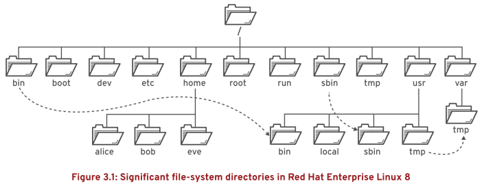
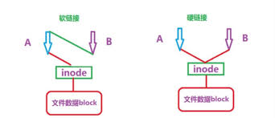

第三章 从命令行管理文件
目标：
- 在Bash shell中拷贝、移动、创建、删除和组织文件。
章节：
- 描述Linux文件系统的层次结构概念
- 通过名称指定文件
- 使用命令行工具管理文件
- 制作文件间的链接
- 使用Shell扩展匹配文件名
第一节：描述Linux文件系统的层次结构概念
目标：
- 完成本节后，学生应该能描述Linux如何组织文件，以及文件系统结构中各目录的用途。
文件系统层次结构：
- Linux系统中的所有文件存储在文件系统中，它们被组织到一个颠倒的目录树中，称为
文件系统层次结构（file-system hierarchy）。

- / 目录是根目录，位于文件系统层次结构的顶部。
- / 字符还用做目录分隔符
* 注意：
1. Linux文件系统层次结构符合FHS（文件系统层次结构标准，Filesystem Hierarchy Standard）
2. $ man 7 hier：查看文件系统层次结构man帮助手册
- RHEL的重要目录：
1. /usr：安装的软件、共享的库，重要的子目录包括：
a. /usr/bin：用户命令
b. /usr/sbin：系统管理命令
c. /usr/local：本地自定义软件
2. /etc：配置文件
3. /var：可变数据，重启后也永久保存，包含动态变化的文件（如数据库、缓存目录、日志文件等）。
4. /run：自系统启动以来启动的进程的运行时数据，包括进程ID文件和锁定文件等。
此目录中的内容在重启时重新创建。
注意：此目录合并了早期版本RHEL中的/var/run和/var/lock。
5. /home：普通用户存储其个人数据和配置文件的家目录
6. /root：超级用户root的家目录
7. /tmp：供临时文件使用的全局可写空间。
10天内未访问、未更改或未修改的文件将自动从该目录中删除。
另一个临时目录/var/tmp，该目录中的文件如果在30天内未曾访问、更改或修改过，也将被自动删除。
8. /boot：系统启动过程所需的文件
9. /dev：包含特殊的设备文件，供系统访问硬件。
- RHEL 7之后，以下目录内容进行合并，为兼容性考虑，仅保留软链接。
目录包括：/bin与/usr/bin、/sbin与/usr/sbin、/lib与/usr/lib、/lib64与/usr/lib64。

练习 P51：DESCRIBING LINUX FILE SYSTEM HIERARCHY CONCEPTS
第二节：通过名称指定文件
目标：
- 完成本节后，学生应该能：
- 识别文件的相对路径与绝对路径
- 确定并改变工作目录
- 列出目录的内容
绝对路径与相对路径：
- 文件或目录的路径是其在文件系统中的位置
- 文件路径会遍历一个或多个子目录，用斜杠（/）分隔，直至目标位置。
- 目录也称为文件夹，包含其他文件和子目录。
- 绝对路径：文件在文件系统中的确切位置，它从根目录（/）开始，遍历到每个子目录，如/var/log/messages。
- 相对路径：从当前工作目录到达该文件所需的路径，路径不以 / 开头。
- Linux中的文件系统，严格区分大小写，即FileCase.txt和filecase.txt是两个不同文件。
- 非Linux文件系统，如VFAT、NTFS和macOS的HFS+不区分大小写，即名称相同但大小写不同
的文件名依然指向同一文件。
路径导航：
- 家目录可以用 ~ 表示。
- $ pwd：显示当前工作目录的绝对路径
- $ cd：可更改工作目录。如果没有指定任何参数，它将切换到家目录。

$ cd -：回到之前一个目录

$ cd ..：进入父目录（.表示当前目录，用以省略当前目录的绝对路径）

- $ ls：列出指定目录的目录内容；如果未指定目录，则列出当前工作目录的内容。


1. ls命令具有多个选项，用于显示文件的属性。
2. -l选项（长列出格式）、-a选项（显示隐藏文件）、-R选项（递归方式，包含所有子目录的内容）。
3. 开头为句点（.）的文件名表示隐藏文件。
4. 要防止文件内容被不当查看，需要使用文件权限。
- $ touch：更新文件的时间戳，也可用于创建空文件。

练习 P60：SPECIFYING FILES BY NAME
第三节：使用命令行工具管理文件
目标：
- 完成本节后，学生应该能创建、拷贝、移动并且删除文件或目录。
命令行文件管理：
- 常见文件管理命令：

创建目录：
- mkdir命令可创建一个或多个目录或子目录
- $ mkdir -p <dir1>/<dir2>：可以创建目录树（创建父目录），但是需要小心拼写错误。
$ mkdir <dir1> <dir2>：可以创建多个目录

复制文件：
- cp命令可复制文件，在当前目录或指定目录中创建新文件。
- 它也可将多个文件复制到某一目录中
- 注意：如果目标文件已存在，则cp命令会覆盖该文件。

- 在通过一个命令复制多个文件时，最后一个参数必须为目录。
- 默认情况下，cp不复制目录，而会忽略它们。
- 如果复制目录或子目录，需使用-r选项。


移动文件：
- mv命令可将文件从一个位置移动到另一个位置
- 如果位置相同，这实际上是重命名。


删除文件或目录：
- rm命令删除文件
- $ rm -r：递归删除（目录）
$ rm -rf：强制递归删除（目录）
$ rmdir：仅删除空目录
- 注意：没有取消删除功能，也没有垃圾箱。

练习 P70：MANAGING FILES USING COMMAND-LINE TOOLS
第四节：制作文件间的链接
目标：
- 完成本节后，学生应该能使用硬链接与符号（软）链接使多个文件名引用同一个文件。
硬链接与软链接：
- 可以创建指向同一文件的多个名称。
- 有两种方法可以做到这一点：硬链接、软链接（有时也称为符号链接）。
- 每种方法都各有利弊。
创建硬链接：
- 每个文件都以一个硬链接开始
- 新的硬链接与原始文件的一切属性和内容完全相同，同步更新。
- ls -l命令可以显示文件硬链接数量

- 使用ln命令为现有文件创建新硬链接

- $ ls -il <filename>：查看文件的inode（索引节点编号）
- 如果两个文件具有相同的inode，则表示它们以硬链接连接彼此。

- 即使原始文件被删除，只要存在至少一个硬链接，该文件的内容就依然可用。
- 只有删除了最后一个硬链接时，才会将数据从存储中删除。
硬链接的局限性：
- 硬链接只能用于常规文件。
- 不能使用ln来创建指向目录或特殊文件的硬链接。
- 只有当两个文件都位于同一文件系统上时，才能使用硬链接。
创建软链接：
- ln -s命令可创建软链接，也称为“符号链接”。
- 软链接不是常规文件，而是指向现有文件或目录的特殊类型的文件。
- 软链接相比硬链接有一定的优势：
1. 可以链接位于不同文件系统上的两个文件。
2. 可以指向目录或特殊文件，而不仅限于常规文件。


- 当原始文件被删除后，软链接依然会指向该文件。
- 指向缺失的文件的软链接称为“悬挂的软链接”（断链）。
- 若重新创建与原始文件同名的文件，软链接将重新创建。

* 硬链接与软链接比较：

练习 P79：MAKING LINKS BETWEEN FILES
第五节：使用Shell扩展匹配文件名
目标：
- 完成本节后，学生应该能使用Bash shell的模式匹配特性高效地运行命令。
命令行扩展：
- Bash有多种扩展命令行的方式，包括模式匹配、主目录扩展、字符串扩展和变量替换等。
- 其中最强大的是路径名称匹配功能，在过去被称为“通配”（globbing）。
- Bash通配功能通常称为“通配符”。
- 使用元字符（metacharacters）扩展文件与路径名称的匹配功能。
- 常用元字符与匹配：


波浪符（tilde）扩展：
- 波浪符（~）匹配当前用户的家目录

大括号（brace）扩展：
- 大括号扩展用于生成任意字符串，快速创建文件或目录。
- 大括号扩展可以互相嵌套
- 双句点语法（..）可扩展成一个序列，使得 {m..p} 扩展为 m n o p。

变量扩展：
- 通过变量，可以从命令行或在shell脚本内轻松访问和修改存储的数据。

- 为了避免因其它shell扩展而引起的错误，可以将变量的名称放在大括号中，
如${VARIABLENAME}。

命令替换（substitution）：
- $(command)：命令替换

- `command`：也表示命令替换，不推荐使用。
- 命令替换中使用反引号（`）的缺点：
1. 反引号很容易与单引号混用
2. 反引号不能用于嵌套

防止参数被扩展：
- 在Bash shell中，许多字符有特殊含义。
- 为了防止shell在命令行的某些部分上执行shell扩展，可以为字符和字符串加引号或执行转义。
- 反斜杠（backslash，\）是Bash shell中的转义字符。
- 它可以防止紧随其后的字符被扩展。

- 如果要保护较长的字符串，则使用单引号（'）或双引号（"）来括起字符串。
- 单引号将阻止所有shell扩展。
- 双引号则阻止大部分shell扩展。
- 双引号可以阻止通配和shell扩展，但依然允许命令和变量替换。

- 单引号则可以按字面解译所有的文本。

练习 P86：MATCHING FILE NAMES WITH SHELL EXPANSIONS
Lab P90：MANAGING FILES FROM THE COMMAND LINE